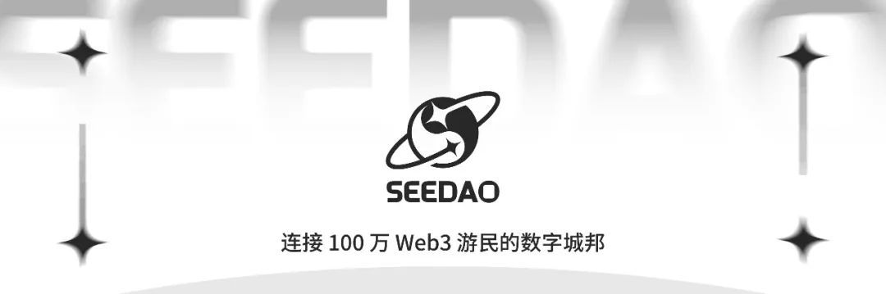

kc 数字游民｜Deschool Cofounder
“ 我觉得更重要的是从自己的角度出发，思考自己想要得到什么；不管是数字游民还是任何其他生活方式，我们都应该以平和的心态去面对自己和世界，真实地追求内心的平静和满足；不要觉得没有出路，因为无论选择哪条路，走着走着都会越来越宽。”
创立Deschool 教育平台原因
在Web3的早期阶段我参加了SeeDAO。当时Azuki和Stepn引发了许多人对于NFT和GameFi的兴趣，但对于Web3这个概念以及相关教育资源的理解还不够清晰。为了填补这一空白，我们希望能够提供一套完整的课程计划来帮助人们理解和学习Web3，当时与SeeDAO Web3大学团队会面，了解他们的需求并表达了帮助他们开发工具的愿望。初期我们并没有追求独立的项目或短期的经济回报，我们更关注于打造一个有意义的工具和学习资源，帮助人们在Web3的世界中更好地学习和成长。我们意识到，除了内容本身，使用基于Web3技术的工具和平台来学习Web3知识同样重要。这样可以提供更好的学习体验，并使学习者更好地了解和应用Web3的概念和技术。
图片来自@kc
在不同数字游民社区的体验
在逃离上海后，我有幸参加了DNA（安吉数字游民公社）的内测活动。在那里我遇到了一群非常有趣和多元化的人，他们各自有着独特的背景和故事。有人开着咖啡车，以旅行的方式探索世界；有人从大公司辞职，选择从事性疗愈的工作。这些人让我重新审视自己的生活和价值观。在与他们的交流中，我逐渐放下了对外界期望的执着，开始更加关注自身的成长和内心的平静。在大理瓦猫社区的日子里，我每天下午回家后，楼下的客厅总是挤满了人；这里是一个充满活力和创造力的场所，人们聚集在一起分享想法、经验和故事。这种密集的交流让我受益匪浅，也让我更加珍惜社区的力量和互动的价值。这段经历让我意识到社区不仅是一个地方，更是一种精神和价值观的归属。在社区中我们可以相互支持、学习和成长，创造出比个人更大的力量。也让我明白不管是数字游民还是任何其他生活方式，我们都应该以平和的心态去面对自己和世界，真实地追求内心的平静和满足。
数字游民的亲密关系
最近在成都认识了一对令我羡慕的情侣。男生是杰出的创业者，在MIT担任讲师后成功创办了一家人工智能项目，得到了红杉资本的投资。他们在深圳度过了两年，但疫情后决定一起辞职，踏上旅程探索世界。男生分享了有关亲密关系的观点。他认为每段亲密关系实际上都是为了自己而存在，通过冲突和了解对方更好地了解自己。亲密关系需要外部刺激来促使成长，通过共同经历更多事情才能真正发展自己。这对情侣的决定让我羡慕不已。他们选择一起旅行和成长，而不是追逐传统成功标志。我渴望拥有这样的精神层面的亲密关系，与伴侣一起探索生活的奇迹。
图片来自@kc
对于在什么年龄要做该年龄的事情的看法
不同的年龄会选择不同的事情。我觉得更重要的是从自己的角度出发，思考自己想要得到什么。无论是赚钱还是事业等等，关键是找到一条能够实现目标的路径。举个例子，如果你想结婚，尽管现在很少有人敢公开说出这个愿望，但有些人确实希望能够有一个真诚而亲密的关系。这样的伴侣能够真正了解你的脆弱之处。对我来说，当区块链市场崩盘时，我亏损了很多钱，但没有人可以倾诉，因为我父母一直认为区块链是骗局。然而，如果我在亲密关系中有一个可以倾诉的人，我可能不需要花那么多时间才能恢复过来。亲密关系并不限于恋人，也可以是真正的好朋友。当世界变得残酷时，有一个可以相互慰藉的人是非常重要的。总之，年龄并不是决定我们做什么的唯一标准，我们应该从自己的内心出发，思考自己想要实现什么，以及愿意为之付出怎样的代价和成本。
对从 WEB2 进入WEB3或
想做数字游民的姐妹的建议
在做决策时，关键是思考自己的期望和目标。我们不能指望得到所有的东西，所以需要思考当前的不满意之处，并确定可以牺牲的部分。这样做决策后就不容易后悔了，因为很多人喜欢稳定的工作和收入，可以在周末放松。选择进入WEB3领域可能会带来不稳定性，但我选择它是因为我追求自由和学习相关知识，当我实现这些目标后，我会意识到完美不存在，一切都不是稳定的。因为无论做何决策，我们不可能得到所有的东西，所以关键是做好准备，钱只是次要的。自由职业的概念在几年前就得到了许多博主的推崇，他们建议我们随时准备好一笔资金，可以随时辞职，摆脱不喜欢的工作。我认为可以用投资的思维来理解这个概念，就像持有某种加密货币一样，如果它的表现不如预期，我们可以套用类似的思路。如果我们觉得工作没有发展空间，让我们感到不开心，或者亲密关系不合适，那么在流动性允许的情况下，我们可以考虑做出改变。当我们已经投入了大量成本时，撤退可能很困难，但如果我们有第二笔资金可以选择另一条路，那可能是最优的选项。
图片来自@kc
女孩可以成为任何人
不要觉得没有出路，因为无论选择哪条路，走着走着都会越来越宽。我觉得很多女生面临的问题并不是女生本身的问题，而是我们拥有丰富情感的特质。在一些小触发后，情感可能被放大，如果没有改变的话就会无限放大。女生更容易出现抑郁症或躁郁症，我身边有很多女生都面临精神困扰。但要意识到只要你做某些事情，并知道自己为什么要做以及期待得到什么，建立一个从小开始的正反馈机制，逐渐扩大正向影响，才能真正进行自我疗愈。不是依赖他人或单纯选择某个方向，而是不断为自己构建正反馈的机制。这样女生的情绪可能会变得更好。对我来说，重要的是建立这样的机制，然后先活下去。
扫码加入 SeeGIRLS 微信群 与我们一起探索
内容来源｜小姚
设计排版｜小姚
审核｜Ines